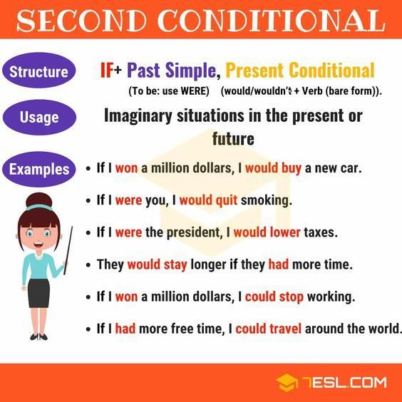

Explanation
Conditionals describe the result of a certain condition.
- The if clause tells you the condition (If you study hard)
- the main clause tells you the result (you will pass your exams).
- The order of the clauses does not change the meaning.
If you study hard, you will pass your exams.
will pass your exams if you study hard.
Second conditional
The second conditional is used to imagine present or future situations that are impossible or unlikely in reality.
- If we had a garden, we could have a cat.
- If I won a lot of money, I'd buy a big house in the country.
- I wouldn't worry if I were you.
When if is followed by the verb be, it is grammatically correct to say if I were, if he were, if she were and if it were. However, it is also common to hear these structures with was, especially in the he/she form.
- If I were you, I wouldn't mention it.
- If she was prime minister, she would invest more money in schools.
- He would travel more if he was younger.
The structure is usually: if + past simple >> + would + infinitive.
